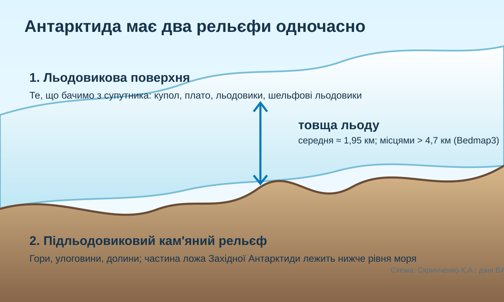

0. Гіпотеза до теорії
Твердження: «Антарктида — майже плоский материк, бо з космосу вона виглядає як суцільна біла поверхня».
1. Погляд з орбіти: що видно, а що приховано?

NASA MODIS, мозаїка Антарктиди, 27 січня 2009. На поверхні добре видно льодовиковий щит, Трансантарктичні гори та шельфові льодовики.
2. Реальна карта: материк навколо 90° пд. ш.
Картографічний детектив
Знайдіть на карті Південний полюс, Антарктичний півострів, моря Ведделла й Росса, Трансантарктичні гори. Потім відкрийте карту світу в атласі.
3. Вимірюємо відстань, а не віримо підпису
КТП пропонує визначити за фізичною картою світу відстань від Антарктиди до інших материків. Зробіть щонайменше одне вимірювання за масштабом атласу. Для контролю використайте відомий реальний орієнтир: Антарктичний півострів лежить найближче до Південної Америки; Australian Antarctic Program наводить приблизно 1238 км від Ушуаї до станції Марамбіо на півночі Антарктичного півострова.
4. Історія відкриття: чому тут немає одного «простого» першовідкривача?
Експедиція Джеймса Кука перетнула Південне полярне коло, але материк не побачила.
Кілька експедицій — Фаддея Беллінсгаузена й Михайла Лазарєва, Едварда Брансфілда та Натаніеля Палмера — спостерігали антарктичні землі в близький період.
Руаль Амундсен із командою першими досягли Південного полюса.
5. «Подвійний рельєф»: головне дослідження уроку

У 2025 році British Antarctic Survey оприлюднила Bedmap3 — найдетальнішу на той момент карту рельєфу під льодовиковим щитом. Вона поєднує понад шість десятиліть вимірювань. Середня товщина антарктичного льоду разом із шельфами — близько 1948 м, а в одному з каньйонів Землі Вілкса льодовик сягає приблизно 4757 м.
Отже, «висота Антарктиди» на фізичній карті часто описує верхню поверхню льоду, тоді як кам’яне ложе може лежати значно нижче — місцями навіть нижче рівня моря.
6. Коротке відео: «зняти» крижаний щит
NASA Goddard / Bedmap2: візуалізація підльодовикового рельєфу. Після перегляду порівняйте поверхню льоду та кам’яне ложе.
7. Спочатку Ваш висновок — лише потім теорія
Сформулюйте проміжний висновок у 2–4 реченнях: у чому саме унікальність географічного положення й рельєфу Антарктиди?
8. Теорія після діяльності
| Що встановили | Географічний зміст |
|---|---|
| Полярне положення | Антарктида розташована навколо Південного полюса, майже повністю південніше Антарктичного кола й оточена Південним океаном. |
| Найближчий сусід | Найближче лежить Південна Америка; Антарктичний півострів простягається в її напрямку. |
| Назва | «Антарктика» походить від грецького antarktikos — «протилежний Арктиці»; Антарктида — материк, а Антарктика — ширша південна полярна область. |
| Подвійний рельєф | Є рельєф поверхні льодовикового щита й окремий кам’яний рельєф під льодом. Трансантарктичні гори поділяють Східну та Західну Антарктиду. |
| Чому материк «найвищий» | Висока середня абсолютна висота значною мірою зумовлена потужним льодовиковим щитом, а не лише висотою гірських порід. |
9. CER: доведіть, а не повторіть
Проблема: «Супутникового фото достатньо, щоб описати рельєф Антарктиди».
10. Домашнє завдання
Обов’язкове: опрацювати §39 електронного підручника та скласти мінікарту номенклатури: Антарктичний півострів, Південний полюс, Трансантарктичні гори, масив Вінсон, моря Ведделла й Росса, шельфові льодовики Росса та Фільхнера—Ронне.
Доказове: оберіть один об’єкт і поясніть, чи він належить до кам’яного, льодовикового або прибережно-морського рельєфу та яким джерелом це можна перевірити.
11. Тест — 10 балів
Тест відкриється лише після введення прізвища, імені та класу.